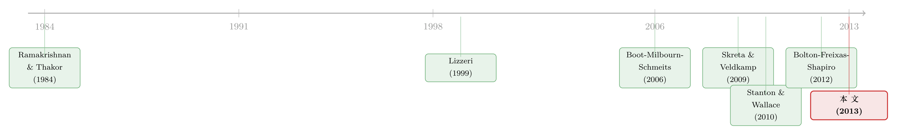

评级注水，错的真是「谁付钱」吗？——当一张 AAA 同时是信息，也是「监管通行证」
本文读的是 Opp, Opp & Harris (2013, Journal of Financial Economics)：把信用评级的「双重身份」——既是给投资者的信息、又是监管institutions的依据——写进一个理性预期模型，证明评级注水未必源于投资者上当或「发行人付费」的阴谋，而是 评级机构在替机构投资者兜售「监管套利」。一旦highly-rated证券享受的监管优势超过某个内生阈值，评级机构会干脆放弃生产任何信息，专心卖 AAA。复杂证券（如 CDO）正是这种「制度性注水」的天然温床。
1 引言：一个「谁付钱」解释不了的横截面
2008–2009 年那场危机里，评级机构几乎是被钉在耻辱柱上的。众议院监督委员会主席 Henry Waxman 的盖棺定论是：「评级机构的故事，是一个彻头彻尾的失败的故事。」流行的逻辑也简单得让人信服——既然是发行人（issuer）掏钱买评级，那评级机构当然有动机把评级往高了打，从中捞取「巨大的利益冲突」（Krugman, 2010 语）。一句话：发行人付费 (issuer-pays) 模型本身就是原罪。
可是，如果你愿意把这个故事和数据对一对，就会撞上一个很别扭的事实。
危机前夕，结构化证券里 AAA（Aaa）评级的占比高得离谱——据 Fitch (2007)，担保债务凭证 (collateralized debt obligation, CDO) 里约 60% 拿到了 Aaa，而同期普通公司债里只有 1%。可与此同时，公司债 (corporate bond) 的评级标准却一直稳如老狗：Ashcraft, Goldsmith-Pinkham, and Vickery (2010) 记录到，2001–2007 年住房抵押贷款证券 (MBS) 的评级标准在节节滑坡，但公司债的评级始终保守。
问题来了：同一批评级机构、同一套「发行人付费」的收费模式，凭什么对公司债下得了手、却对 CDO 下不了手？ 如果注水的根源真是「谁付钱」，那它应该对所有资产一视同仁地烂掉才对。「发行人付费」是个时间不变、资产类别不变的常量，可我们看到的注水却是有时有、有的资产有、有的资产没有的变量。常量解释不了变量。
这正是本文的出发点。作者们想说的是：与其反复追问评级机构在某一场危机里「为什么失败」，不如退一步，去问一个更结构化的问题——到底是什么样的经济条件，会让「把信息生产外包给评级机构」这件事从可行变得不可行？
2 被忽略的那半张脸：评级的「双重身份」
要回答上面的问题，本文引入了一个在「阴谋论」叙事里被系统性忽略的角色：评级的监管用途。
我们习惯把评级想成纯粹的信息——它告诉你这只债违约概率多大。但在现实的金融体系里，评级还有另外半张脸：它被写进了 监管规则 (rating-contingent regulation)。银行的 资本金要求 (capital requirements)、保险公司和货币基金能持有什么资产，全都挂钩评级。一只债从 BBB 升到 AAA，对持有它的银行来说，意味着实打实的资本节约。
关键区分在这里：评级影响价格，可以走 两条独立的通道——一条是它揭示的「这债到底有多险」的信息，另一条是它带来的「监管减负」。Kisgen and Strahan (2010)、Ashcraft 等 (2011) 都提供了大量证据，表明对边际投资者 (marginal investor) 而言，评级的监管含义是 第一位 的关切。
这一步换框架，威力极大。因为它意味着：机构投资者愿意为一张 AAA 多付的钱，里头有一块和「这债是否真的安全」毫无关系——那是「监管通行证」本身的价格。于是评级机构能卖的，就不只是信息，还有监管减负这项服务。本文的核心贡献，就是把「评级机构出售监管优待的能力」显式地写进模型，再看它如何反过来侵蚀评级标准。
还有一个常被忽视的前提：本文坚持 理性预期 (rational expectations)。投资者不傻，他们完全预见到评级机构的策略性动机，不会被「明摆着的利益冲突」骗到。这一点把本文和那些「靠投资者非理性来制造注水」的模型（下文细说）干净利落地区分开了——在本文里，投资者明知评级被注了水，价格里也已经把这份注水折掉了，可注水照样发生。这才是真正反直觉、也真正值得讲透的地方。
（关于评级机构能否「看穿」市场噪声、信息通道究竟如何运作，可参见《当价格在说谎：评级机构凭什么「看穿」市场的噪声》。）
3 模型：把「内生的信息」摆上台面
本文是一篇彻头彻尾的理论论文，所以我们得把模型的骨架一节节拆开。
项目与类型。 经济里有连续测度为 1 的企业，每家由一个没有现金的企业家拥有，手里有个需要投资 1 单位的风险项目：成功则期末净现金流为 \(R>1\)，失败则为 0。企业只在违约概率 (default probability) 上有差别。有两种类型 \(n\in\{g,b\}\)（好、坏），违约概率分别是 \(d_g, d_b\)。类型 \(n\) 项目的净现值 (NPV) 为：
$$ V_n = R(1-d_n) - 1 $$
好类型是正 NPV（\(V_g>0\)），坏类型是负 NPV（\(V_b<0\)）。至关重要的一条假设：人群里好类型的占比 \(p_g\) 是公共知识，但平均项目的违约概率 \(d = p_g d_g + p_b d_b\) 对应的是负 NPV。
这个假设是整台戏的引擎。它意味着：如果没人能分辨好坏，那么 逆向选择 (adverse selection) 会让公开债市场直接关门——理性投资者算出平均亏，谁也不肯掏钱，连真正的好项目也一起被淹死。信息因此是有社会价值的：只有把好坏区分到足够程度，市场才能重新开张。这恰恰是本文与 Lizzeri (1999) 的分水岭——在 Lizzeri 里信息对社会无所谓，在这里信息能救活一个柠檬市场。
内生的信号。 企业自己知道类型，投资者不知道。但有一家垄断的评级机构，掌握一项信息生产技术，能产生关于类型的、有噪声的二元私有信号 \(s\in\{A,B\}\)。信号的精度不是天上掉的，而是评级机构自己选的——这是全文的题眼：
a1 | 信号出错的概率；它不是外生常数，而由评级机构的投入内生决定，α<1/2 时信号才有信息含量 a2 | 评级机构选择的信息生产水平 i∈[0,1/2]，i 越大信号越精确，因而 1−α 越接近 1
信息生产的成本 \(C(i)\) 递增且凸，满足两个边界条件：
$$ C'(0)=0, \qquad \lim_{i\to 1/2} C'(i)=\infty $$
这两条保证了内点解——评级机构不会一点信息都不生产（因为头一点信息几乎免费），也不会把信号做到完美（因为越往后越贵到无穷）。正是「信息生产是内生且有成本的」这一点，后面会撑起整个注水机制：作者反复强调，如果信息免费，评级机构永远会买一个完美信号、注水绝不会发生。
两步发布与「指示性评级」。 与现实一致，评级分两步走：评级机构先免费给企业一个 指示性评级 (indicative rating) \(\tilde r\)；企业若决定付费 \(f\)，\(\tilde r\) 才变成公开评级 \(r\)，否则企业保持「未评级 (unrated, U)」。由于信号 \(s\) 外人无从验证，评级机构可以注水——本文把它形式化为一个概率 \(e\)：对一个收到 \(B\) 信号的企业，评级机构仍以概率 \(e\) 给出指示性的 \(A\)。\(e=0\) 即 如实披露 (full disclosure)，它在给定信息量下使评级的信息含量最大。
外部选项与监管优势。 好类型还有「别处证明自己」的外部选项 \(U_n\)，满足 \(U_b=0 < U_g < V_g\)——它代表竞争压力，防止垄断评级机构把好项目的全部剩余榨干。最后，本文用一个外生变量 \(\theta\) 代表 A 级债券的监管优势，即边际投资者从「持有高评级证券」中获得的监管好处。全文把 \(\theta\) 当作外生参数，专心研究它对评级标准的影响。
4 没有监管时：为什么「如实评级」反而最赚钱
先关掉监管（\(\theta=0\)），看一个干净的基准。
直觉上你会担心：垄断的评级机构、还能注水，岂不是会拼命多发 A？但模型给出的答案恰恰相反——没有监管时，评级机构会主动选择如实披露，注水不会发生。
为什么？关键在那个 trade-off。注水（多发 A）确实能扩大「高评级证券」的数量，短期看能多收几笔费。可是，多发的 A 稀释了评级里的信息含量：当投资者理性地知道你 A 给得太松，A 这块牌子就不值钱了，评级机构能向每家企业收取的费用 \(f\) 随之下降。一边是「多卖几张牌」，一边是「每张牌都掉价」。在没有监管补贴的世界里，这个权衡的天平倒向如实披露——因为如实披露能最大化评级机构从「提供信息」中能榨取的租金。
这正是本文要传递的第一个、也是最容易被忽略的结论：单凭「发行人付费」，并不必然导致评级注水。 把发行人付费等同于注水，是把一个充分条件都算不上的东西当成了原罪。所以，要解释注水，我们必须往模型里加点别的东西——那个东西就是监管。
5 引入监管：音量一定调大，信息未必变清
现在把 \(\theta>0\) 拧开。监管优势让高评级证券对机构投资者更值钱，于是企业有了更强的「想要一个 A」的需求，评级机构则有了「多发 A」的动机。
这里本文给出一对很微妙的结论，值得分开讲。
结论一（明确的）：高评级证券的数量必定上升。 只要引入偏向高评级证券的监管，相对于无监管的均衡，评级机构总会把更多企业评为高级别。监管优势是个实打实的、所有人都想要的补贴，这一步没有悬念。
结论二（含糊的）：信息生产可能升、也可能降，取决于类型分布。 这才是反直觉的地方。
- 当类型分布偏向好类型（\(p_g\) 高）时，监管优势上升反而会促使评级机构生产更多信息。逻辑是：好公司本来就多，把信号做得更精确，就能把更多真正的好公司识别出来、贴上 A——精度越高、合格地拿到 A 的证券越多，评级机构越赚。于是「想多卖 A」和「想把信息做准」在这里是同向的。
- 当坏类型更多时，结论反转：此时多发 A 只能靠注水，精度反而拖后腿。
换句话说，监管不是单调地腐蚀信息。在「好年景」里，它甚至能让评级变得更 informative。这一条直接对应了 Griffin and Tang (2012) 记录的、2007 年年中评级标准的突变——经济转向时，分布的天平一翻，评级机构的最优策略就可能整体平移。
（监管「复杂度」本身如何被量化、如何反过来塑造行为，可参见《把监管写成一段代码：当「复杂」第一次有了可以测量的刻度》。）
6 真正关键的一步：当监管优势越过那道阈值
到这里，故事都还在「评级机构虽然多发 A，但仍在认真生产信息」的范围内。真正的反转，发生在监管优势 \(\theta\) 足够大的时候。
本文证明：存在一个内生决定的阈值。当边际投资者从高评级证券里得到的监管好处 \(\theta\) 超过这个阈值时，会发生一件极端的事——委托信息生产 (delegated information acquisition) 彻底崩溃。评级机构发现，与其花成本去生产信息、再如实披露，不如干脆什么信息都不生产，纯粹靠注水来替企业完成 监管套利 (regulatory arbitrage)。
这个阈值的经济含义极其漂亮，值得逐字读懂：
它就是那个让「纯粹的监管套利」给评级机构带来的利润，恰好等于「最优地付出成本生产信息、再如实披露信号」所能带来的利润的那个 \(\theta\) 水平。
也就是说，评级机构在两条路之间做比较： 1. 认真路线：花 \(C(i)\) 生产信息，卖「准确的信息」，赚信息租金； 2. 躺平路线：不生产任何信息，把所有人都评成 A，卖「监管通行证」，赚套利租金。
当 \(\theta\) 越过阈值，路线 2 的利润反超路线 1，评级机构理性地选择躺平。注意：这里没有投资者被骗、没有评级 shopping、没有任何非理性。投资者完全知道 A 已经不含信息，他们只是为「监管减负」这块价值付费而已。注水，是一个理性均衡的结果。
那么，哪些资产最容易掉进这个陷阱？答案藏在阈值对评估成本的依赖里。复杂证券（如 CDO、结构化产品）的信息成本远高于公司债——公司债是评级机构几十年的「家常便饭」，生产信息又便宜又熟。评估成本越高，路线 1 越不划算，阈值越低，越容易被监管诱导出注水。这一下子就把开篇那个「60% vs 1%」的横截面之谜解开了：
复杂、难评的证券（CDO）注水，传统、易评的证券（公司债）准确——这不是评级机构「对某些资产更黑心」，而是评估成本的高低决定了它们离那道崩溃阈值有多近。同一家评级机构、同一套激励，在不同资产上走向了相反的结局。
模型还顺手给出几条新的、可检验的预测： - 注水更可能在繁荣期发生：好公司占比 \(p_g\) 高、或项目价值高时，注水门槛更易被跨过； - 竞争越弱、注水越烈：好企业的外部选项 \(U_g\) 越弱（评级机构议价权越强），越容易注水； - Dodd-Frank 的含义：该法案要求取消评级挂钩的监管，在本文框架里就等于把 \(\theta\) 强行压回 0——于是评级机构失去了卖「监管通行证」的生意，被推回第 4 节那个「如实披露最赚钱」的基准。这是本文相对于纯「行为偏差」模型最独到的政策含义：治本之策不在评级机构的收费模式，而在监管对评级的依赖本身。
He, Qian, and Strahan (2012) 与 Kronlund (2011) 的证据也和本文的理性预期假设吻合：投资者会为「注水风险更大」的债券要求更高的收益率。Kronlund 发现，若某评级机构去年比同行平均高评一个 notch，今年它评的新债在控制评级后仍要多付约 12 个基点的收益率——投资者显然把预期的偏差「折」进了价格里。
7 文献脉络
把这篇论文放回它所在的那条河流，会看得更清楚。
最早的源头，是关于认证中介 (certification intermediary) 的市场结构之争。Ramakrishnan and Thakor (1984)、Diamond (1984)、Strausz (2005) 这一脉认为认证者本质上是自然垄断；而 Lizzeri (1999) 给出了相反的结论。本文的母体正是 Lizzeri：它研究一个能零成本观察卖方类型的认证者的最优披露策略，结论是「啥也不披露」。本文的第一处关键突破，是把信息内生化——评级机构不仅选披露什么，还要先花成本去获取信息；第二处突破，是引入会影响买方估值的监管，研究它对信息获取的反馈。

与本文并肩的，是同期几篇解释注水的理论。Bolton, Freixas, and Shapiro (2012) 的注水来自足够高比例的天真投资者；Skreta and Veldkamp (2009) 的注水来自投资者没能理性地为 评级 shopping (ratings shopping) 导致的上偏纠偏；Sangiorgi and Spatt (2012) 则让投资者理性地把 shopping 纳入考量。本文与它们的根本分野在于：前两者要靠投资者被骗，本文不需要。本文的注水，源于评级机构「能破坏监管系统」这条全新的渠道，既不要 shopping、也不要非理性。给定 2008 危机里卷入的是何等老练的机构（Stanton and Wallace, 2010 即认为 CMBS 投资者的成熟度使「天真」难以立足），一个纯靠行为扭曲的解释，可能太简单了。
此外，Manso (2011)、Boot, Milbourn, and Schmeits (2006) 走的是「多重均衡/协调」的路；Becker and Milbourn (2011) 则从实证上检验竞争如何影响评级质量。本文在这片地图上的坐标很清晰：它是第一个把「评级的监管用途」当作注水第一推动力、并在完全理性预期下推导出来的模型。
评论与延伸（Q&A + 研究方向）
(a) 几个可能的疑问
Q：既然投资者理性、知道 A 已经不含信息，那他们为什么还买这些「注水」的 AAA？
因为他们买的根本不是信息，而是「监管减负」。一只 A 级债哪怕信息含量为零，对受监管的银行、保险、货基来说仍意味着更低的资本占用、更宽的持有许可。投资者为 \(\theta\) 付费、而非为「安全」付费——价格里这两块是分开的，且都没被骗。
Q：本文和 Skreta–Veldkamp、Bolton–Freixas–Shapiro 那类「注水模型」到底差在哪？
差在「谁被骗」。那两篇都需要投资者在均衡里被发行人或评级机构骗到（天真投资者、或没纠正 shopping 偏差）。本文不需要任何人被骗：注水是评级机构在理性投资者面前、为兜售监管套利而做出的最优选择。机制是监管渠道，不是行为偏差。
Q：为什么是「监管」而不是「发行人付费」才是元凶？这两者怎么区分？
因为「发行人付费」是个常量，解释不了「公司债准确、CDO 注水」这种横截面与时序变化。本文证明：关掉监管（\(\theta=0\)）后，即便保留发行人付费，如实披露反而最赚钱、注水消失。能开关注水的变量是 \(\theta\)（及评估成本），不是收费模式。
Q：「复杂证券更容易注水」是模型硬塞进去的假设，还是推出来的结论？
是推出来的。复杂 = 评估成本高 → 认真生产信息那条路线的利润更低 → 触发注水的阈值更低 → 更靠近崩溃。复杂度不是直接假设了注水，而是通过成本影响了那道内生阈值的位置。
Q：「监管优势越过阈值就完全不生产信息」是不是太极端、不像现实？
这是模型为讲清机制而做的锐化。现实里评级机构不会字面意义上「零信息」，但比较静态的方向是稳健的：监管补贴越大、评估越贵，信息生产越被挤出、注水越严重。论文在附录与在线附录里讨论了多类型、重复博弈承诺等更一般的设定，定性结论不变。
Q：Dodd-Frank 取消评级挂钩监管，按本文就该药到病除？现实里好像没那么干净。
模型里确实如此——把 \(\theta\) 压回 0，注水的生意就没了。但本文是「正面分析」，把现行监管当外生给定，不讨论最优监管设计；作者也坦言，用市场价格（如 CDS）替代评级来做监管会有 Bond, Goldstein, and Prescott (2010) 指出的「价格反映监管自身」的反身性问题。所以现实里取消依赖说易行难——这正是本文留给规范分析的接口。
(b) 几个可能的研究问题与提案
1. 把「监管优势 \(\theta\)」拿去做实证识别。 【经济故事】本文的核心比较静态是「\(\theta\) 越过阈值 → 信息生产崩溃」。Stanton and Wallace (2010) 提到的、危机前针对 Aaa 商业 MBS 的风险资本权重下调，几乎就是一次 \(\theta\) 的外生跳升。 【可行性】中。可用 Basel/SEC 资本权重的分段调整做 双重差分 (DiD)，比较受影响与不受影响资产类别的评级标准（如 Aaa 占比、评级-违约背离）。难点是评估成本的代理变量与平行趋势论证。
2. 把框架搬到公司债的外资持有人。 【经济故事】不同国别监管对同一评级的「优待」并不一致——巴塞尔本地化执行、本国持有偏好都会制造 \(\theta\) 的跨境异质性。外资比例高的债券，是否面临系统性不同的评级标准？ 【可行性】中。需要债券层面的持有人国别数据（如 TIC、Morningstar 持仓）叠加多机构评级。识别可用各国资本新规的时点差异。与《外资真是「蝗虫」吗？》的跨国视角天然互补。
3. 评估成本的「机器代理」。 【经济故事】本文阈值依赖评估成本，但评估成本从来没被直接量过。能否用证券条款的复杂度（分层数、底层资产异质性、合约文本长度）构造一个可比的「评估成本指数」，再去检验「成本越高、注水越烈」？ 【可行性】高。底层数据（条款书、募集说明书）可得，NLP 抽取文本复杂度已成熟。难点是把「文本复杂」干净地映射到「信息成本」。
4. Dodd-Frank 取消评级依赖的事件研究。 【经济故事】本文预言 \(\theta\to 0\) 会把评级推回如实披露。Dodd-Frank 分阶段移除监管对评级的引用，提供了一连串时点。 【可行性】中。可在受影响资产上做事件研究，看 Aaa 占比与评级-市场价差是否收敛。挑战是同期危机后多项改革叠加，难以把 \(\theta\) 的效应单独剥离。
5. 竞争 × 监管的交互。 【经济故事】本文里好企业的外部选项 \(U_g\) 越弱、注水越烈，而 Becker and Milbourn (2011) 发现竞争加剧会降低评级质量。两条线能否在一个框架里统一——竞争究竟是放大还是抑制了监管诱导的注水？ 【可行性】中。理论上是 \(U_g\) 与 \(\theta\) 的联合比较静态；实证上可用 Fitch 进入某细分市场作为竞争冲击，与监管权重变化交乘。
我的判断
本文最漂亮的地方，是它换了一个问题。当所有人都在追问「评级机构为什么道德败坏」时，它把镜头拉到了制度层面：评级之所以会烂，不是因为评级机构特别坏，而是因为我们让一张本该传递信息的纸，同时背上了「监管通行证」的功能。一旦这张通行证足够值钱，理性的评级机构就会把信息这门生意整个抛掉。这个「内生阈值 + 评估成本」的组合，干净利落地同时解释了横截面（CDO vs 公司债）、时序（危机前后）和政策（Dodd-Frank）三件事，是难得的「一招吃三家」的理论。
对识别（这里是对模型机制）的担忧，我有两点。其一，「越过阈值就完全停止生产信息」这个角点解过于锐利，现实中的评级是连续地、而非断崖式地变脏；模型把它简化成开关，方便讲机制，但也让定量预测难以直接对账。其二，\(\theta\) 被当作纯外生，可监管对评级的依赖本身往往是评级历史表现的内生产物——监管者正是因为评级「过去很准」才去依赖它。把 \(\theta\) 内生化（监管者也在学习），可能会得到更丰富、也更难注水的动态。
后续我最想看到的，是有人真的把 \(\theta\) 落到数据上——用一次次资本权重调整作为 \(\theta\) 的外生跳变，把这篇纯理论的比较静态做成可检验的因果。如果「监管优势跳升 → 该类资产评级标准崩溃」能在数据里被干净地识别出来，那这篇 2013 年的模型，就不只是把危机讲圆了，而是真正给监管者递上了一把可以提前预警的尺子。
参考文献
Ashcraft, A.B., Goldsmith-Pinkham, P., Vickery, J.I. (2010). MBS ratings and the mortgage credit boom. Federal Reserve Bank of New York Staff Report No. 449.
Becker, B., Milbourn, T. (2011). How did increased competition affect credit ratings? Journal of Financial Economics 101(3), 493–514.
Bolton, P., Freixas, X., Shapiro, J. (2012). The credit ratings game. Journal of Finance 67(1), 85–112.
Boot, A.W.A., Milbourn, T.T., Schmeits, A. (2006). Credit ratings as coordination mechanisms. Review of Financial Studies 19(1), 81–118.
Bond, P., Goldstein, I., Prescott, E.S. (2010). Market-based corrective actions. Review of Financial Studies 23(2), 781–820.
Lizzeri, A. (1999). Information revelation and certification intermediaries. RAND Journal of Economics 30(2), 214–231.
Manso, G. (2011). Feedback effects of credit ratings. Working paper, University of California, Berkeley.
Ramakrishnan, R.T.S., Thakor, A.V. (1984). Information reliability and a theory of financial intermediation. Review of Economic Studies 51(3), 415–432.
Sangiorgi, F., Spatt, C. (2012). Opacity, credit rating shopping and bias. Working paper, Stockholm School of Economics and Carnegie Mellon.
Skreta, V., Veldkamp, L. (2009). Ratings shopping and asset complexity: a theory of ratings inflation. Journal of Monetary Economics 56(5), 678–695.
Stanton, R., Wallace, N. (2010). CMBS subordination, ratings inflation, and the crisis of 2007–2009. Working paper, University of California, Berkeley.
White, L.J. (2010). Markets: the credit rating agencies. Journal of Economic Perspectives 24(2), 211–226.